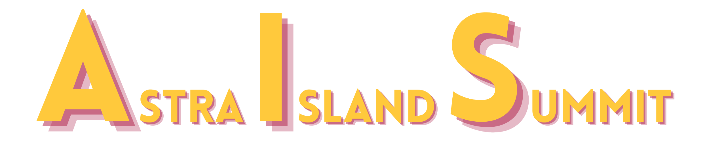

Bringing the stars to Everyone
Access TransmissionIntroducing Astra Island Summit, a conference about astronomy and the cosmos. Discover everything related to the universe.
This conference is 100% created and organized by teenagers at Club Tunivisions les Nouvelles Générations. Our goal is to share our passion about astronomy with the youth in Djerba.
25 July 2026
Centre Elife Djerba
Register to receive updates.
Let's Go